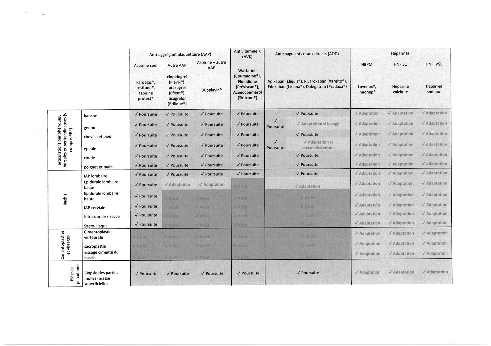
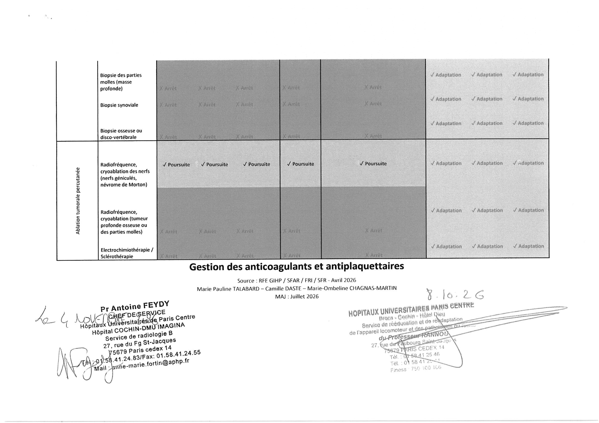
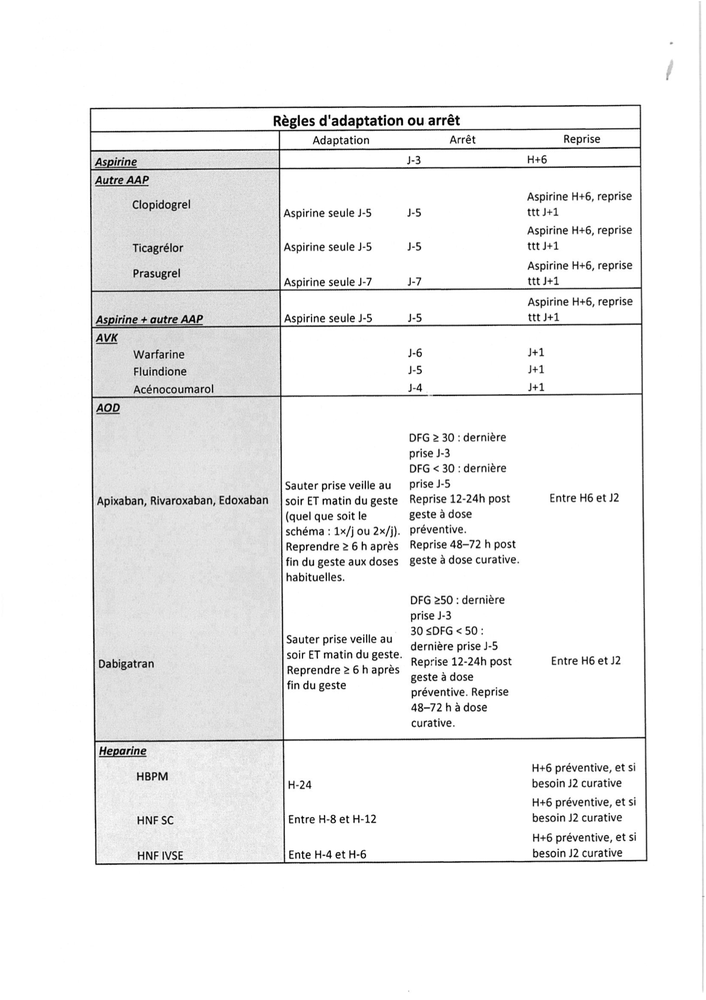

| Classe | Molécule / Spécialité | ✓ Adaptation (si geste « Adaptation ») | ✕ Arrêt (si geste « Arrêt ») | ↻ Reprise post-geste |
|---|---|---|---|---|
| Anti-agrégant plaquettaire (AAP) | Aspirine seule Kardégic®, Résitune®, Aspirine Protect® |
— | Dernière prise J-3 | H+6 après le geste |
| Clopidogrel Plavix® |
Relais Aspirine seule à J-5 | Dernière prise J-5 | Aspirine H+6, reprise ttt habituel à J+1 | |
| Ticagrélor Brilique® |
Relais Aspirine seule à J-5 | Dernière prise J-5 | Aspirine H+6, reprise ttt habituel à J+1 | |
| Prasugrel Efient® |
Relais Aspirine seule à J-7 | Dernière prise J-7 | Aspirine H+6, reprise ttt habituel à J+1 | |
| Aspirine + autre AAP Duoplavin® / bithérapie |
Maintien Aspirine seule dès J-5 (arrêt du 2e AAP à J-5) |
Arrêt complet J-5 (à discuter avec cardiologue) |
Aspirine H+6, reprise ttt complet à J+1 | |
| Antivitamine K (AVK) | Warfarine Coumadine® |
— | Dernière prise J-6 Contrôle INR avant geste |
Reprise à J+1 |
| Fluindione Préviscan® |
— | Dernière prise J-5 Contrôle INR avant geste |
Reprise à J+1 | |
| Acénocoumarol Sintrom® |
— | Dernière prise J-4 Contrôle INR avant geste |
Reprise à J+1 | |
| Anticoagulants Oraux Directs (AOD) | Apixaban, Rivaroxaban, Edoxaban Eliquis®, Xarelto®, Lixiana® |
Sauter la prise de la veille au soir ET du matin du geste (quel que soit le schéma : 1x/j ou 2x/j). Reprendre ≥ 6 h après la fin du geste aux doses habituelles. |
• DFG ≥ 30 : dernière prise à J-3 • DFG < 30 : dernière prise à J-5 Reprise 12–24h post-geste à dose préventive. Reprise 48–72h post-geste à dose curative. |
Entre H+6 et J+2 (H+6 si adaptation ; 12–24h préventif puis 48–72h curatif si arrêt) |
| Dabigatran Pradaxa® |
Sauter la prise de la veille au soir ET du matin du geste. Reprendre ≥ 6 h après la fin du geste. |
• DFG ≥ 50 : dernière prise à J-3 • 30 ≤ DFG < 50 : dernière prise à J-5 Reprise 12–24h post-geste à dose préventive. Reprise 48–72h à dose curative. |
Entre H+6 et J+2 (H+6 si adaptation ; 12–24h préventif puis 48–72h curatif si arrêt) |
|
| Héparines | HBPM Lovenox®, Innohep® |
Dernière injection à H-24 | — (Suspension H-24) | H+6 à dose préventive, et si besoin J2 à dose curative |
| HNF SC Héparine calcique (Calciparine®) |
Dernière injection entre H-8 et H-12 | — (Suspension H-8 à H-12) | H+6 à dose préventive, et si besoin J2 à dose curative | |
| HNF IVSE Héparine sodique à la seringue électrique |
Arrêt IVSE entre H-4 et H-6 | — (Suspension H-4 à H-6) | H+6 à dose préventive, et si besoin J2 à dose curative |


